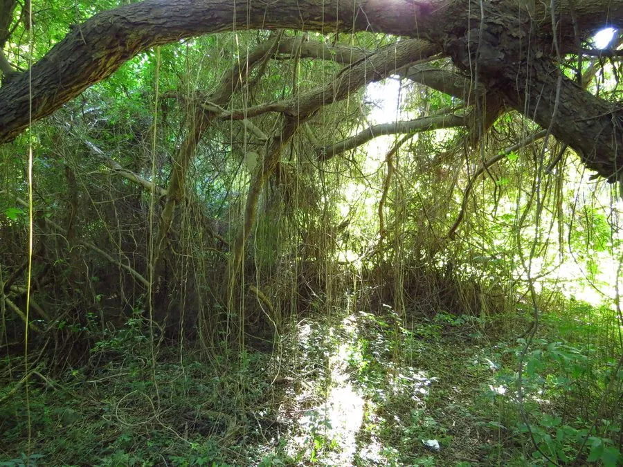

花卉与草本 · 植物界
锦屏藤 Cissus verticillata

葡萄科白粉藤属常绿藤本，茎节上长出成排红色气生根，垂挂如珠帘，是热带庭园中独特的观根藤本植物。
- 分类
- 门被子植物门纲木兰纲目葡萄目科葡萄科属白粉藤属
- 栖息环境
- 热带美洲的雨林边缘，喜高温高湿、阳光充足
- 地理分布
- 原产热带美洲；中国华南、云南南部及世界热带地区栽培
- 保护级别
- IUCN 暂无评估；栽培广泛，野生种群未受明显威胁
物种志
锦屏藤为常绿藤本，蔓长可达 5–10 米，茎绿色或带红色，节间较长。叶片心形至卵形，长 6–12 厘米，边缘具锯齿，卷须与叶对生。茎节上能长出大量细长的气生根，初为红色，后转淡黄或灰白，长可达 1–3 米，成排下垂如珠帘；花小、淡绿色，聚伞花序，果实为浆果。
本种原产热带美洲，喜高温高湿、阳光充足的环境，在中国华南常作廊架、墙垣与庭院垂吊植物。它最引人注目的是从茎节垂下的红色气生根，微风吹拂时如红色珠帘轻摇，因此有“一帘幽梦”的雅称。锦屏藤不耐寒，北方需温室栽培；气生根在干燥环境中会变短，需保持较高空气湿度。其生长迅速，需定期修剪过密枝条。
形态与习性
- 蔓长5–10 米，茎节可生红色气生根
- 气生根长 1–3 米，成排下垂如珠帘
- 花期夏季，花小、淡绿色
- 光照喜光，也耐半阴
- 水分喜高湿，气生根需经常喷雾
- 土壤疏松肥沃、排水良好的壤土
- 主要用途廊架垂吊、墙垣绿化与庭院造景
趣味知识
- 锦屏藤垂下的“珠帘”其实是茎节上长出的气生根，不是花也不是果。
- 气生根初生时呈鲜红色，随后逐渐变为淡黄或灰白色。
- 它原产热带美洲，因造型奇特被称为“一帘幽梦”，在华南庭园中很受欢迎。
- 锦屏藤的气生根能吸收空气中的水分，但主要功能仍是攀附与辅助呼吸。